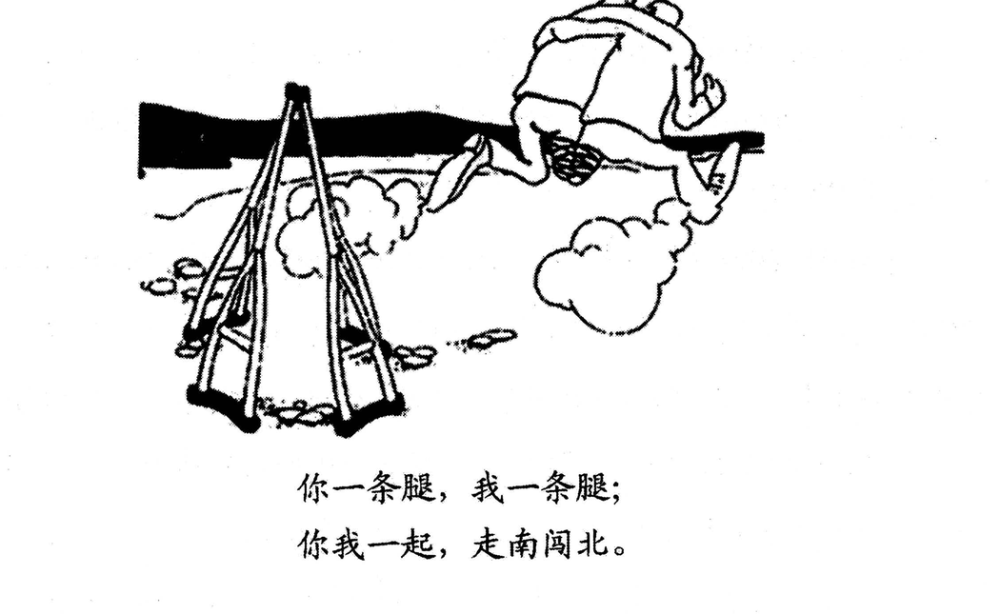

A小作文 · 道歉信（10 分）
You have just come back from Canada and found a music CD in your luggage that you forgot to return to Bob, your landlord there. Write him a letter to
1) make an apology, and
2) suggest a solution.
You should write about 100 words on ANSWER SHEET 2.
Do not sign your own name at the end of the letter. Use “Li Ming” instead.
Do not write the address. (10 points)
💭 审题三件事
- 先定"我错在哪"，一句话说得出口才动笔。本题的错不是"偷"，是疏忽——把别人的 CD 无意带回了国。措辞就该落在 by mistake / my carelessness 上：认账要干脆，但别把自己写成小偷（那是语气过头），也别写成"这不能怪我"（那是不认账）。
- 方案先想"寄"这一条主线，再补一条备选。只给一个方案显得敷衍，给三个又写不下 100 词。主方案（快递寄回，写明时间）＋ 一条兜底（万一丢了我重新买一张），两句话就把"诚意"和"周到"同时写出来了——这正是评分标准里"内容完整"要的东西。
- 100 词的信不许有废话段。三段：致歉+原委（约 45 词）／方案（约 50 词）／收尾（约 15 词）。凡是"我知道这给您带来了不便，我感到非常抱歉，真的非常抱歉"这类重复情绪句，一句就够，写两句就要从方案里挤掉一条动作。
✍️ 范文（ 词 · 🟡 亮点点击看讲解）
Dear Bob,
致歉+原委I am writing to apologize for taking your music CD back to China by mistake. It was not until I unpacked my luggage in Beijing that I found the disc at the bottom of my suitcase, and I feel truly sorry for my carelessness.
方案To put things right, I have had the CD carefully packed and will send it back by express mail this Friday, so that it should reach you within a week. Should it go missing on the way, I would be more than happy to order you a new copy online.
收尾Thank you once again for your kindness during my stay. Please accept my sincere apologies.
Yours sincerely,
Li Ming
我写这封信，是为把您的音乐 CD 误带回中国一事向您道歉。直到在北京打开行李，我才发现这张碟还压在箱底，为自己的疏忽深感抱歉。
为弥补这个过失，我已把 CD 仔细包好，本周五将以快递寄回，一周之内应可送达。万一途中遗失，我很乐意在网上另买一张新的给您。
再次感谢您在我居住期间的照顾。请接受我诚挚的歉意。
此致
李明
- 要点只道歉、不给方案——本题最大的坑。Directions 编了 1)2) 两条，阅卷就按两条数；通篇 sorry 而没有一个"我打算怎么办"，内容分直接砍半。
- 要点方案空心化：“I will solve this problem as soon as possible.” 这句里没有一个可执行动作，与没写等价。动词（send back）＋方式（by express mail）＋时间（this Friday）＝内容分。
- 格式写成 Dear Sir or Madam——收信人是有名有姓的熟人 Bob，这么写等于告诉阅卷人"我在背模板、没读题"。
- 格式签真名（题目明令用 Li Ming，有判零风险）／写地址（题目明令 Do not write the address）／补上日期（考研书信不需要）。三条都是白扔分。
- 语气过度辩解：“It was not my fault because the room was too dark…” 道歉信里原因只用一句陈述事实，绝不用来推卸。反面是另一个极端——写成认罪书（I am a terrible person），语域失控同样扣分。
- 语言apologize 拼写与搭配：apologize to sb for sth；名词是 apology（make an apology）。写成 apologize sb / apology for to 都是低级语言错。
- 字数about 100 词：95–115 最稳。低于 80 按档扣，超过 130 挤占大作文时间。本文 词。
- 第一句就把"为什么写信"说完。I am writing to apologize for + doing —— 应用文的第一句永远是"目的句"，阅卷人 3 秒钟要看到你写的是哪一类信。
- 用强调句交代原委，比大白话贵。It was not until I unpacked my luggage in Beijing that I found… 一个 not until 强调句把"回国后才发现"说得又准又有层次；换成 When I came back, I found… 意思一样，语言分不一样。
- 兜底方案用倒装虚拟：Should it go missing on the way, I would… 这是全信的语言亮点。Should + 主语 + 动词原形＝ If it should…，省去 if 后必须倒装。小作文里出现一个正确的倒装，语言档立刻从"基本正确"往上抬。
- 结尾先谢再歉。先 Thank you for your kindness（把关系拉回房东与房客的温度），再 Please accept my sincere apologies（郑重收口）。顺序反过来会显得"道歉只是客套"。
- 时态分工要干净：说事故用过去时／完成时（found / have had…packed），说方案用将来时（will send），说兜底用虚拟（would be）。三种时态各司其职，是这封信语言分的骨架。
B大作文 · 图画作文（20 分）
Write an essay of 160–200 words based on the following drawing. In your essay, you should
1) describe the drawing briefly,
2) explain its intended meaning, and then
3) give your comments.
You should write neatly on ANSWER SHEET 2. (20 points)

- 左边：一副拐杖被撇在原地。四根杖杆聚成人字形立着，杖尖着地——它们的主人已经不需要它们了。
- 右边：两个各失去一条腿的人，肩并肩、手臂搭在对方肩上，正一步一步向前走。两人合起来恰好是一双腿。
- 中间：一串脚印 + 扬起的尘土。脚印从拐杖那头一直延伸到两人脚下——他们已经走出去一段路了，这是"走得成"的证据，不是空口号。
- 图注（画面下方的两行汉字）：「你一条腿，我一条腿；你我一起，走南闯北。」⚠️ 这两行字是本题的题眼，也是第一段必须译进英文的采分内容。
💭 审题：题眼全写在图注里
- 图上有字，字就是答案。凡漫画自带文字（对话气泡、标语、标题），命题人就是怕你看不懂才写上去的——它一定是主旨的直译。本题只要把「你一条腿，我一条腿；你我一起，走南闯北」老老实实译进第一段，立意就不可能跑。反过来，漏译图注 = 描图段要点不全。
- 别把重心放在"残疾"上。画里的两个人不是来求同情的，他们已经把拐杖扔了、已经在走。写成"我们要关爱残疾人、社会要给他们帮助"就跑偏了：图里没有第三方施助者，这是互助不是受助。同理，"身残志坚、自强不息"是把"你我一起"整个丢掉。
- "团结就是力量"只是起点，不是终点。方向对，但停在口号上只能拿二档。要往下走一层，讲清机制：合作之所以有用，不是因为人多，而是因为 A 的短板正好被 B 的长处盖住（互补），并且两人朝同一个方向使劲（否则互相拖累）。把"互补"和"同向"这两个词写出来，档次就上去了。
📐 描图段三看（本页新增 · 换任何一年的图都能用）
| 看什么 | 在本图里 | 为什么它是采分点 |
|---|---|---|
| ① 看图上的字 | 图注两行汉字必须译出：You have one leg, I have one leg; together we can travel the length and breadth of the land. | 命题人写上去的字＝主旨直译。有字不译，描图段就是残的（2022 讲座漫画同理，两句对话必须转述）。 |
| ② 看最反常的地方 | 拐杖被撇在原地——正常人会拄着走，画里的人偏偏不要了。 | 反常处就是寓意的入口：不要拐杖是因为找到了比拐杖更好的支撑——另一个人。这句话就是第二段的核心。 |
| ③ 看动作方向 | 脚印从拐杖延伸到两人脚下，尘土扬起——他们正在往前走，而且已经走了一段。 | 方向决定文章基调是肯定还是讽刺。本图是肯定（走得成），所以全文是赞美合作；若画的是两人朝相反方向拉扯，立意就要翻成批评。 |
⚠️ Directions 第三条的三种问法，第三段写法完全不同
| 第 3 条要求 | 第三段该写什么 | 出处 |
|---|---|---|
| give your comments （谈你的看法） | 表态 + 建议/展望：In my view / Accordingly, … should … 。可以不举例，但要有自己的判断句，不能只复述第二段。 | 2008 本题 · 2022 讲座漫画（见该页） |
| support your view with an example/examples | 必须有例子：A case in point is … + 细节（时间、地点、当时的想法、结果）+ 一句拉回论点。空喊"很多人都这样"不算例子。 | 2007 守门员漫画（见该页） |
| what should be done / make suggestions | 只给对策：分"个人层面 / 制度层面"两条写，比堆三条同质建议清楚得多。 | 各年变体 |
- 题目要什么，段落就写什么，顺序也照抄题目。三条 Directions 就是三段的段落大纲，也是阅卷人手里的要点清单——照抄是结构分最省力的拿法，别自作主张换顺序。
✍️ 范文（ 词 · 🟡 亮点点击看讲解）
①描图As is vividly depicted in the drawing, two men, each having lost a leg, walk forward with their arms around each other’s shoulders, leaving a pair of crutches standing behind them. The caption reads: “You have one leg, I have one leg; together we can travel the length and breadth of the land.”
②寓意Simple as the picture is, it carries a profound message about cooperation. Taken separately, neither man could go a single step without his crutches; joined together, however, their two legs make a perfect pair, and the disability that once confined them all but disappears. What the drawing celebrates, therefore, is not sympathy but complementarity: real partners do not simply add up their strengths; they cover each other’s weaknesses — provided they walk in the same direction.
③评论This message deserves our attention more than ever. In an age of ever more complex tasks, hardly anyone is born with every leg he needs: a team, a company, even a nation prospers by pooling what its members lack alone. To lean on others is thus no confession of weakness. For my part, I would rather be one leg of a walking pair than a whole man standing still.
画面虽简单，却道出了关于合作的深意。分开来看，两人离了拐杖谁也迈不出一步；合在一起，两条腿恰好凑成一双，曾经困住他们的残缺几乎荡然无存。因此这幅画赞美的并不是同情，而是互补：真正的伙伴不只是把各自的长处相加，他们更是替对方盖住短板——前提是两人朝同一个方向走。
这个道理在今天比以往任何时候都更值得重视。在任务日益复杂的时代，几乎没有人生来就长着自己所需的每一条腿：一个团队、一家公司乃至一个国家，都是靠把成员各自欠缺的部分汇拢起来才兴旺的。因此，学会依靠他人绝不是示弱。就我而言，我宁愿做一双能走路的腿中的一条，也不愿做一个站着不动的完人。
🔁 一图三写：同一幅图，第三段的三个版本
本题给的是 comments 版。但同一幅图完全可能在别处以别的问法出现——前两段一字不动，只换第三段。三个版本都按 60–75 词写好，可直接背。
- 跑题写成"关爱残疾人"：图里没有第三方施助者，两人是互相搀扶。一旦写成"社会应给残疾人更多帮助"，立意就从"合作"滑到"慈善"，掉一大档。
- 跑题写成"身残志坚"：重心落到个人意志，把图注上半句「你一条腿，我一条腿」当背景板、把「你我一起」丢了——题眼漏了就是没看懂图。
- 要点不译图注。这是本题特有的失分点：图上有汉字而作文里一个字都没体现，描图段按要点不全扣。
- 要点第二段只说"团结就是力量"，不解释为什么。评分标准里"内容切题、论述充分"要的是机制（互补 + 同向），不是口号。
- 语言开头写 “With the development of society, more and more people…”——与图无关的万能句是阅卷负面清单第一名，第一句就暴露背模板。
- 语言把 crutch（拐杖）写成 crutches 的单复数错、把 disabled 写成 disable、handicap 当形容词用。写不准的词就绕开：two men, each having lost a leg 比 two disabled persons 更稳也更好。
- 字数160–200：190–197 最稳。不足 160 按比例扣；卡到 200 整反而容易在誊写时超出去（本文 词）。
- 描图段用一句话装三件事：两人搭肩前行（主句）＋ 各失一腿（each having lost a leg，独立主格式的分词短语）＋ 拐杖被撇下（leaving… 现在分词作结果状语）。一句话三层结构，比三个短句更像英语，还省词给后两段。
- 第二段的骨架是一组对举：Taken separately, neither… ; joined together, however, … 。两个分词短语句首对举，是议论文里最讨巧的"对比句式"，阅卷人一眼看到"分开 vs 合起来"。
- "not A but B" 是全文最贵的一句：not sympathy but complementarity。它同时完成了两件事：排除了"关爱残疾人"这个错误立意，点明了"互补"这个正确立意。凡是自己容易跑题的地方，就用 not…but… 明写出来，等于告诉阅卷人"我知道那个坑"。
- 加一个前提条件，论证才不空：provided they walk in the same direction。合作不是无条件的好——补上这半句，文章从"表扬合作"变成"分析合作"，这是二档与一档的分水岭。
- 末句回扣图注：one leg of a walking pair than a whole man standing still —— 用图里的"腿"和"走"收尾，比 "In a word, cooperation is important" 有力十倍。图画作文的最后一句永远回到图里去找。
- 时态：描图与说理都用一般现在时（画面是静止呈现的、道理是普遍的）；只有 ③-B 举例版切到过去时/现在完成时。三段时态别混。
03🩺 跑题诊断表（这幅图最容易滑向的四个方向）
| 你可能写成 | 错在哪 | 大概什么档 |
|---|---|---|
| 身残志坚、自强不息 | 把图注上半句当背景，丢掉「你我一起」这个题眼；文章里只有一个人。 | 立意偏，10 分上下 |
| 关爱残疾人 / 社会应给予帮助 | 图里没有第三方施助者，两人是互助不是受助；方向从"合作"滑到"慈善"。 | 立意偏，10 分上下 |
| 助人为乐、乐于奉献 | 单向的"我帮你"≠ 双向的"我们互相撑住"。少了"我也缺一条腿"这一半。 | 沾边，12 分上下 |
| 团结就是力量（只喊口号） | 方向对，但不讲机制（互补 / 同向），通篇是"我们应该团结"的同义反复。 | 二档，13–14 分 |
| ✅ 合作 = 优势互补：各自的短板被对方盖住，前提是彼此依靠且朝同一方向 | 抓住「一条腿 + 一条腿 = 一双腿」这个算式，并补上成立条件。 | 一档，17 分以上 |
04素材联动 · 2008 本年六篇正好全能喂这篇作文
05📮 小作文九类信件分诊表（Part A 一表通吃）
Part A 只有 10 分，但它是全卷最容易拿满的 10 分——认对体裁、写对首尾句、避开那一条特有雷区就够了。读完 Directions 先在草稿纸上写三个字母：体裁 / 收信人 / 要点数。
| 体裁 | 第一句（目的句） | 收尾句 | 这一类特有的雷区 |
|---|---|---|---|
| 道歉信 apology 2008 本题 | I am writing to apologize for + doing … | Please accept my sincere apologies. | 只道歉不给方案；方案空心；过度辩解／过度自责 |
| 建议信 suggestion 2007 | I am writing to put forward several suggestions concerning … | I would be grateful if these could be taken into consideration. | 写成投诉信；建议只有口号没有可执行动作 |
| 邀请信 invitation 2022 | On behalf of …, I am writing to invite you to … | We are looking forward to your favorable reply. | 漏时间/地点/事由；不说明"为什么请你" |
| 感谢信 thanks | I am writing to express my heartfelt thanks for … | Please accept my sincere gratitude once again. | 空洞：不写清对方到底做了哪一件具体的事 |
| 投诉信 complaint | I am writing to complain about … | I would appreciate it if you could look into this matter. | 只发泄情绪、不提出明确诉求（退款/更换/道歉） |
| 咨询信 inquiry | I am writing to ask for information concerning … | I would appreciate an early reply. | 问题堆成一团——要 1) 2) 3) 编号问 |
| 申请信 application | I am writing to apply for the position of … | I would be glad to attend an interview at your convenience. | 只夸自己不对岗；不留联系方式 |
| 推荐信 recommendation | It is my pleasure to recommend … for … | I recommend him/her without reservation. | 通篇形容词、没有一件具体事例 |
| 通知/告示 notice | 标题居中 Notice ／ 正文直入事由 | 落款写单位（如 Students’ Union）+ 日期 | 按书信格式写（加 Dear… / Yours sincerely）；忘了落款单位 |
- Directions 里编了号的要点，就是阅卷人手里的清单。本题 1) apology 2) solution，两条各占一段，宁可写得短，也不能缺。
- 署名一律 Li Ming（近年也可能指定别的名字，照抄题目那个）；不写地址、不写日期，除非题目要求。
- 称呼决定语域，一路端到底。Dear Sir or Madam ⟹ 全文正式（不缩写、不口语）；Dear + 名字（本题的 Dear Bob）⟹ 半正式，可以有一点温度，但仍不写俚语。
06可迁移框架（换题也能用）
道歉信四步骨架
图画作文骨架 · 评论版（第三条要 comments 时用）
07📊 三年大作文横向对照（已做的三年）
| 年份 | 图里画了什么 | 主题落点 | 第 3 条要求 | 本年特有的坑 |
|---|---|---|---|---|
| 2007 | 守门员与射手各自想象中的球门（两个气泡） | 自信心 / 心态 | support with an example | 看成"乐观 vs 悲观"（图里两人都在怕）；第三段不举例 |
| 2008 本题 | 两个各失一腿的人搭肩前行，拐杖被撇在身后 | 合作 / 优势互补 | give your comments | 写成"关爱残疾人"或"身残志坚"；漏译图注 |
| 2022 | 两名学生在讲座海报前争论要不要去听 | 学习观 / 跨界吸收 | give your comments | 不站队、和稀泥；漏引对话 |
- 凡是图上有字（对话、标语、图注），第一段就必须把字译进英文。2008 与 2022 都有字，2007 没有——有字的年份，漏译就是描图段直接失分。
- 第三条 Directions 的动词决定第三段的形态：comment ⟹ 表态+建议；example ⟹ 必须举例。开考先读 Directions 三行，别凭上一年的手感写。（这条和阅读新题型的元套路 R32 是同一个道理：先认变体，再动手。）